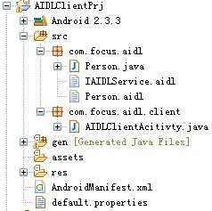

Android 跨进程通信（二）
2. 客户端实现：
（1）目录结构，如下图：

（2）将服务器端的IAIDLService.aidl，Person.aidl和Person.java文件拷贝到本工程中，如上图所示：
（3）res/layout/main.xml实现：
<?xml version="1.0" encoding="utf-8"?><LinearLayout xmlns:android="http://schemas.android.com/apk/res/android
android:layout_width="fill_parent
android:layout_height="fill_parent
android:orientation="vertical" >
<TextView
android:id="@+id/name
android:layout_width="wrap_content
android:layout_height="wrap_content" />
<Button
android:id="@+id/connection
android:layout_width="wrap_content
android:layout_height="wrap_content
android:text="连接" />
<Button
android:id="@+id/message
android:layout_width="wrap_content
android:layout_height="wrap_content
android:enabled="false
android:text="信息" />
<Button
android:id="@+id/person
android:layout_width="wrap_content
android:layout_height="wrap_content
android:enabled="false
android:text="人" />
</LinearLayout>
（4）主Activity实现，从服务器端获取数据在客户端显示：
import android.app.Activity;import android.content.ComponentName;
import android.content.Intent;
import android.content.ServiceConnection;
import android.os.Bundle;
import android.os.IBinder;
import android.os.RemoteException;
import android.view.View;
import android.view.View.OnClickListener;
import android.widget.Button;
import android.widget.TextView;
public class AIDLClientAcitivty extends Activity {
private IAIDLService mAIDLService;
private TextView mName;
private Button mMessage;
private Button mPerson;
/**
* 第一步，创建ServiceConnection对象，在onServiceConnected()方法中获取IAIDLService实现。
*/
private ServiceConnection mServiceConnection = new ServiceConnection() {
public void onServiceConnected(ComponentName name, IBinder service) {
mAIDLService = IAIDLService.Stub.asInterface(service);
mMessage.setEnabled(true);
mPerson.setEnabled(true);
}
public void onServiceDisconnected(ComponentName name) {
mAIDLService = null;
mMessage.setEnabled(false);
mPerson.setEnabled(false);
}
};
@Override
public void onCreate(Bundle savedInstanceState) {
super.onCreate(savedInstanceState);
setContentView(R.layout.main);
mName = (TextView) findViewById(R.id.name);
findViewById(R.id.connection).setOnClickListener(new OnClickListener() {
public void onClick(View view) {
/**
* 第二步，单击"连接"按钮后用mServiceConnection去bind服务器端创建的Service。
*/
Intent service = new Intent("com.focus.aidl.IAIDLService");
bindService(service, mServiceConnection, BIND_AUTO_CREATE);
}
});
mMessage = (Button) findViewById(R.id.message);
mMessage.setOnClickListener(new OnClickListener() {
public void onClick(View view) {
/**
* 第三步，从服务器端获取字符串。
*/
try {
mName.setText(mAIDLService.getName());
} catch (RemoteException e) {
e.printStackTrace();
}
}
});
mPerson = (Button) findViewById(R.id.person);
mPerson.setOnClickListener(new OnClickListener() {
public void onClick(View view) {
/**
* 第四步，从服务器端获取Person对象。
*/
try {
Person mPerson = mAIDLService.getPerson();
mName.setText("姓名:" + mPerson.getName() + ", 年龄:
+ mPerson.getAge());
} catch (RemoteException e) {
e.printStackTrace();
}
}
});
}
}